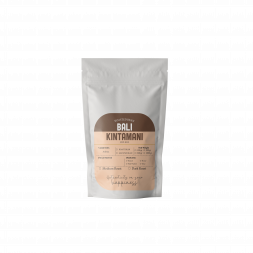
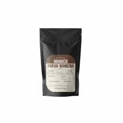

ARABIKA BALI KINTAMANI
Biji Kopi dari Bali Kintamani pilihan yang siap memenuhi kebutuhan ngopi anda, Dengan jenis Arabika hadirkan sensasi ngopi seperti cafe di rumah anda, tersedia ukuran 100 Gr, 200 Gr, 500 Gr dan 1000 Gr. (Untuk Harga, Silahkan Tanya Penjual).
Kopi Bali Kintamani adalah satu diantara kopi arabika yang di kenal mempunyai rasa yang manis serta lembut. Kopi Bali Kintamani mempunyai tingkat keasaman yang hampir sama dengan kopi Jawa / Java. Tetapi, ada yang membedakannya yaitu dari aroma, Kopi Bali mempunyai aroma yang menyengat dibanding dengan kopi Jawa.
ARABIKA FLORES BAJAWA
Biji Kopi dari flores Bajawa pilihan yang siap memenuhi kebutuhan ngopi anda, Dengan jenis Arabika hadirkan sensasi ngopi seperti cafe di rumah anda, tersedia ukuran 100 Gr, 200 Gr, 500 Gr dan 1000 Gr. (Untuk Harga, Silahkan Tanya Penjual).
Kopi Flores memiliki aroma bunga, caramel, kacang – kacangan dengan ditambah sensasi rasa tembakau, menjadikan kopi ini adalah salah satu kopi yang unik di Indonesia. Cita rasa dari kopi Flores ini dipengaruhi karena tanaman kopi tumbuh di tanah vulkanik pada dataran Ngada, Flores, NTT. Di tambah lagi karena ada perpaduan 2 iklim antara iklim tropis Indonesia, dan iklim subtropics Australia.
ARABIKA GAYO
Biji Kopi dari GAYO pilihan yang siap memenuhi kebutuhan ngopi anda, Dengan jenis Arabika hadirkan sensasi ngopi seperti cafe di rumah anda, tersedia ukuran 100 Gr, 200 Gr, 500 Gr dan 1000 Gr. (Untuk Harga, Silahkan Tanya Penjual).
Rasa kopi gayo yang kuat, tingkat keasaman yang rendah dengan sedikit rasa rempah (spice), membuatnya sangat digemari, terutama di Amerika Serikat dan Eropa. Karakter yang clean membuatnya laku sebagai campuran house blend. Ciri khas Kopi Arabika Gayo adalah cenderung memiliki rasa yang tidak konsisten. Hal itu terjadi karena perkebunan kopi di daerah Dataran Tinggi Gayo memiliki ketinggian yang berbeda, serta cara budidaya yang beragam. Kalau kopi yang ditanami di areal yang berbeda, dengan ketinggian yang berbeda, serta varietas yang beragam, maka memungkinkan karakteristik kualitas fisik dan cita rasa juga akan berbeda pula.
ARABIKA LINTONG
Biji Kopi dari Lintong pilihan yang siap memenuhi kebutuhan ngopi anda, Dengan jenis Arabika hadirkan sensasi ngopi seperti cafe di rumah anda, tersedia ukuran 100 Gr, 200 Gr, 500 Gr dan 1000 Gr. (Untuk Harga, Silahkan Tanya Penjual).
Kopi lintong yang memiliki citarasa original, khas, aromatic dan fruity. Kopi yang tumbuh di tanah sekitar Danau Toba tak kalah kualitasnya dengan kopi-kopi lain yang berada di seluruh Nusantara. Kopi Arabica Danau Toba memiliki aroma yang harum dan dengan cita rasa yang kuat dan kompleks. Kopi jenis ini cocok untuk anda yang menyukai kenikmatan tak terbatas. Tunggu apa lagi, dengan Kopi Danau Toba kebahagiaan bisa lahir dari secangkir kopi setiap hari.

ARABIKA PAPUA WAMENA
Biji Kopi dari Papua Wamena pilihan yang siap memenuhi kebutuhan ngopi anda, Dengan jenis Arabika hadirkan sensasi ngopi seperti cafe di rumah anda, tersedia ukuran 100 Gr, 200 Gr, 500 Gr dan 1000 Gr. (Untuk Harga, Silahkan Tanya Penjual).
Kopi Arabika Papua Wamena yang tumbuh di lembah Baliem pegunungan Jayawijaya Wamena dengan ketinggian 1.600 m di atas permukaan laut, yang tumbuh tanpa menggunakan pupuk kimia, karena tanah Papua yang sangat subur sehingga kopi Arabika ini dihasilkan dengan kualitas yang sangat baik. Kopi Arabika ini memiliki cita rasa yang sangat khas di banding dengan cita rasa Arabika lainnya, aroma kopinya harum halus dan memiliki after taste yang sangat manis. Kopi Arabika Papua Wamena juga memiliki kadar asam yang rendah sehingga bisa dikonsumsi oleh semua orang.
ROBUSTA PUNTANG
Biji Kopi dari Robusta Puntang pilihan yang siap memenuhi kebutuhan ngopi anda, Dengan jenis Arabika hadirkan sensasi ngopi seperti cafe di rumah anda, tersedia ukuran 100 Gr, 200 Gr, 500 Gr dan 1000 Gr. (Untuk Harga, Silahkan Tanya Penjual).
Sunda gulali adalah julukan untuk kopi dari Gunung Puntang, karakteristiknya yang manis sedikit asam kopi tersebut sangat cocok di lidah. saat di seruput kopi tersebut memiliki rasa buah lokal seperti pisang, jambu biji, dan nangka.
ROBUSTA TEMANGGUNG
Biji Kopi dari Robusta Temanggung pilihan yang siap memenuhi kebutuhan ngopi anda, Dengan jenis Arabika hadirkan sensasi ngopi seperti cafe di rumah anda, tersedia ukuran 100 Gr, 200 Gr, 500 Gr dan 1000 Gr. (Untuk Harga, Silahkan Tanya Penjual).
Kopi robusta maupun arabica Kabupaten Temanggung memiliki ciri dan karakter khas tersendiri. Robusta memiliki aroma lebih harum dibanding kopi robusta daerah lain. Begitu pula kopi arabica memiliki cita rasa khas, yaitu asam yang tertinggal lama di mulut. Cita rasa kopi ini tidak ditemukan pada cita rasa kopi daerah lain.